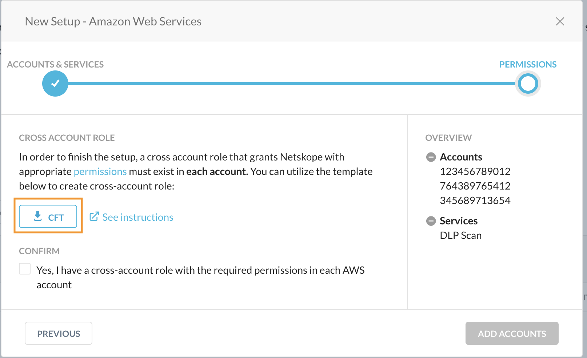
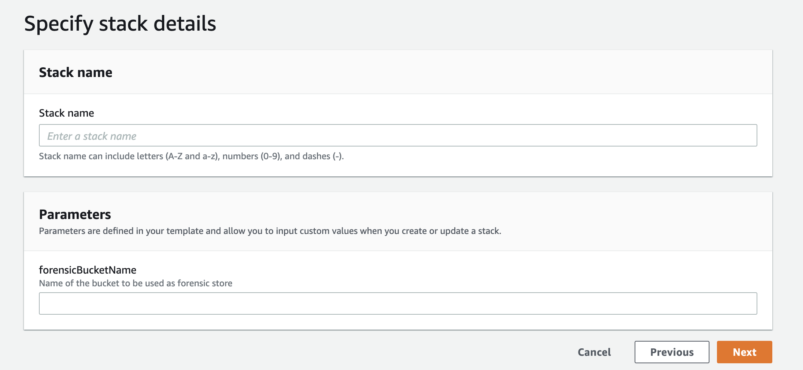
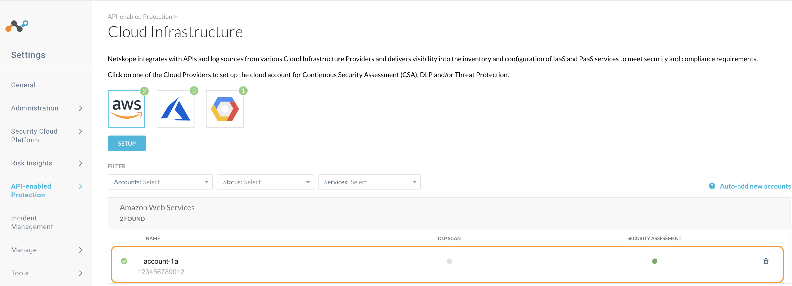

Step 2/2: Configure AWS Permissions for Forensic
Netskope requires permissions to perform certain actions in the AWS account such as creating a stack to receive CloudWatch events. This screen provides a customized CFT with permissions required to set up cross account access between Netskope and your AWS accounts. The permissions defined in the CFT are updated based on the services you've enabled in the Accounts & Services page.
You can review the CFT to understand the various permissions required by Netskope.
Note
Ensure that the AWS accounts have the permissions required to run the Netskope for IaaS services.
To complete the set up you must:
Download the CFT.
Upload the CFT to a new CloudFormation stack in each AWS account.
Confirm that a cross account role with the required permissions is created.
Follow the detailed instructions below to complete the set up.
In the Permissions screen of the New Setup window, click the link to download the CFT.
Log in to the AWS Management Console using the credentials of the AWS account you are setting up with Netskope for IaaS and navigate to Services > CloudFormation.
In the CloudFormation page, click Create stack.

To create a stack with new resources, choose With new resources (standard).
To create a stack with existing resources, choose With existing resources (import resources).
Select Upload a template file and click Choose file to upload the aws-instance-setup.yml. Click Next.

In the Specify stack details page, specify a Stack name.
The stack name must:
Only contain alphanumeric characters and hyphens,
start with an alphabet, and
not be longer than 128 characters.
In the Parameters section of this page, specify the forensic bucket name where you want Netskope to store objects that have violated DLP Forensics. The bucket name must follow the naming rules specified by AWS.
To learn more about bucket naming rules, see the AWS documentation.
Click Next.
In the Configure stack options page, use the default configuration, and click Next.
Review your stack details on the Review page, click the acknowledgment and then click Create stack.
When the creation process is complete, your stack will be displayed on the CloudFormation page.
You can click on the stack to view the details about the stack. The Resources tab displays the various components that are part of aws-instance-setup.yml. The Template tab displays the permissions defined in the template.
In the Netskope UI, confirm that a cross account role with permissions is created in each AWS account. Click Add Accounts.

Netskope adds the AWS accounts to the Settings > API-enabled Protection > Cloud Infrastructure page. The page also displays the services that are enabled for each account.

What happens in the process?
Netskope assumes an IAM role which enables Netskope to write and delete objects from the S3 bucket that you have defined as the forensic destination. Additionally, Netskope also uses the IAM role permissions to list all the buckets and get the locations of all the buckets in your account.
To learn more about defining an S3 bucket as the forensic destination, see Create a Forensic Profile.
AWS Permissions for ForensicsPolicy | Purpose |
|---|---|
s3:GetObject | This implementation of the GET operation retrieves objects from Amazon S3. |
s3:PutObject | This implementation of the PUT operation puts objects that violate DLP Forensics into an Amazon S3 bucket. |
s3:ListBucket | Lists a specific bucket |
s3:ListAllMyBuckets | This implementation of the GET operation returns a list of all buckets owned by the authenticated sender of the request. |
s3:GetBucketLocation | This implementation of the GET operation uses the location subresource to return a bucket's region. |
Note
The NetskopeStack is managed by Netskope and must not be manually updated.
Create a Forensic Profile
You can now create a Forensic Profile to receive forensic data. In the Netskope UI, go to Policies > Forensic and specify the AWS instance name and S3 bucket name. To learn more: Create a Forensic Profile.
When the profile is created, Netskope creates a README.txt file in the S3 bucket to verify the destination bucket.
You can view alerts under Incidents > DLP.